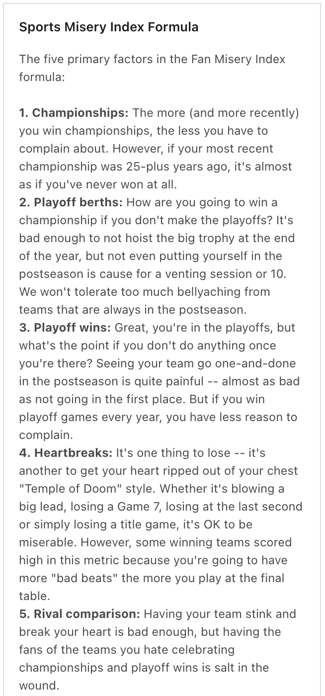
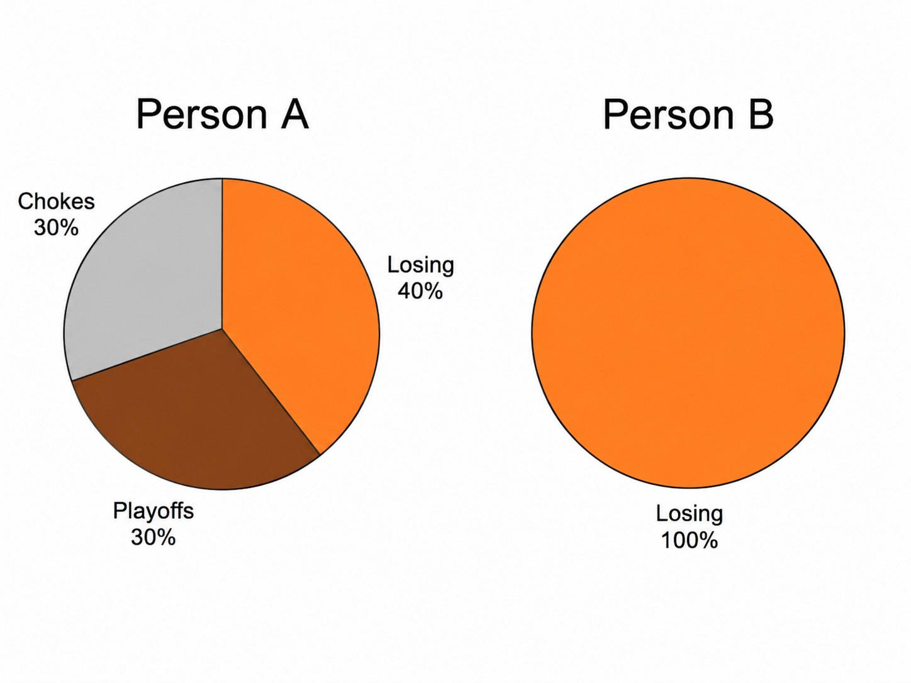
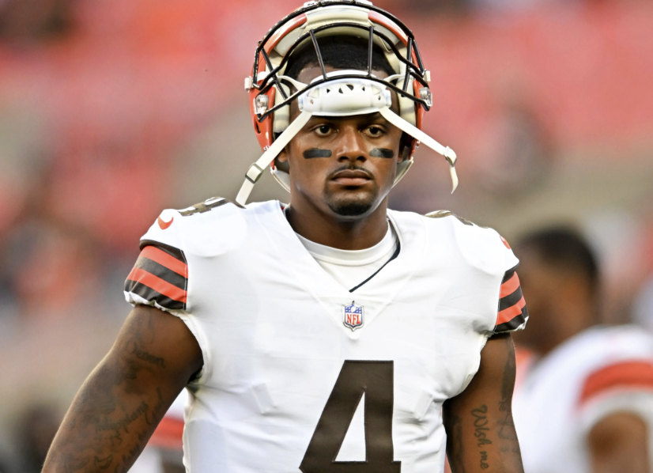

The misery-misery index: why I hate being a Cleveland Browns fan
I have been a fan of the Cleveland Browns for my whole life. A large portion of my family is from Cleveland, and my dad convinced me to be a Browns fan at a young age.
What a terrible decision. The irony is that it somehow gets worse every year. The NFL season starts in one week, and in order to prepare, we paid the largest guaranteed contract in history to a washed quarterback with 24 civil lawsuits against him, and traded the best player in the league away.
As a Data Science major, I’m interested to see just how miserable being a Cleveland Browns fan over the last 20 years has been. ESPN, PFF, and other sporting sites have a statistic called the “Misery Index”, or how miserable a team has been for their fanbase. Oftentimes this is calculated qualitatively, like how NY Times does it, but ESPN does it quantitatively, ranking “Championships”, “Playoff Berths”, “Playoff Wins”, “Heartbreaks”, and “Rival Comparison” as the main misery factors.

My problem with this approach is that from personal experience ESPN’s methodology is too light, and has overlooked factors that have contributed to my anguish as a Cleveland Browns fan. A good example of this is sending away 3 years of future draft picks for a QB with 24 legal cases against him. Or starting 42 different quarterbacks since 1999, having a slight glimmer of hope for each one and crushing disappointment once they inevitably don’t pan out. Or not winning a single game. We won zero games, the second team ever to do so, in 2017.
In order to weigh all these factors, and not come up with arbitrary numbers, I am coming up with a misery index average ranking. So instead of another misery index, it is a robust analysis of misery: across all combinations of “misery”, how many of them result in the Cleveland Browns still being the most miserable franchise in the last 20 or so years. Or, the misery-misery index.

Here is an illustrative example. Person A may say “misery” weights of 40% of losing, 30% of zero playoff berths, and 30% of heartbreaking chokes. Person B may disagree, and say that “misery” weighs 100% of losing. The point is there are many different weighting schemes of misery one can come up with. Using data from nflverse, I am going to randomly sample as many different weights as possible, and determine where the browns rank under each different person's definition of misery, and on average across them.
Model metrics
Because I didn’t feel like coming up with every conceivable metric possible for this analysis, I used ChatGPT. The more metrics we can come up with to give my Cleveland Browns a chance at not being last in something, the better. Here are some of the main misery index parameters I used, sorted by category. Out of 32 NFL teams, I’ve listed what percentile the Cleveland Browns place in each of these statistics. Spoiler alert: we are terrible.
Weighting schemes where Cleveland is the bottom.
Here is the final result. Out of 5,000 different weighting schemes across seven categories: sustained losing, playoff futility, collapse trauma, close-game pain, turnover self-destruction, hope/season collapse, and draft/personnel turnover, the Cleveland Browns rank as the most miserable franchise in 64% of instances. Ironically, hope/season collapse is our best metric, probably because we have no hope to begin with. There is nothing to collapse if the building is never constructed.
Cleveland’s bucket rankings
In simulations where Cleveland isn’t the worst, sustained losing averages only 7.0% of the total weight. Which means the only scenarios in which the Cleveland Browns aren’t the most miserable NFL franchise is when losing is less important. This metric weight can make sense for some franchises that win a lot in the regular season just to lose heartbreakingly in the playoffs, like the Toronto Maple Leafs or our fellow Lake Erie Buffalo Bills, but I’d argue losing so much that you don’t even have opportunities of success is worse. Furthermore, the model places the Browns outside a top-ten miserable franchise in only 3.0% of weighting schemes. To get the Browns out of last, the formula has to turn down sustained losing, playoff futility, and draft/personnel turnover enormously.
Trades are another story. I used tradeverdicts.com, a database of NFL trades, in order to determine how good or bad a trade was for an organization. Because rating trades requires context that the numbers in nflverse don’t provide, this seemed like the easier move to make. Trades are graded A-F on this site, so after converting these grades to numbers I created a trade disaster grade, or seller_score^2 - buyer_score * draft capital given up. Big surprise! We suck.

Some auxiliary charts to show how badly we suck. This graph show each teams sustained losing score and trades/personnel score. So not only does it show how teams low, but it shows how they rebuild. I’ve also included a graph that shows each starter since 1999.
Finally, for every metric the model used, you can see the Browns placement relative to other teams, as well as an average misery trendline compared to other bottom NFL franchises.
The good news is that Cleveland is not the most miserable NFL franchise since 1999. It is only the worst franchise in 64% unique definitions of misery, out of 32 teams.